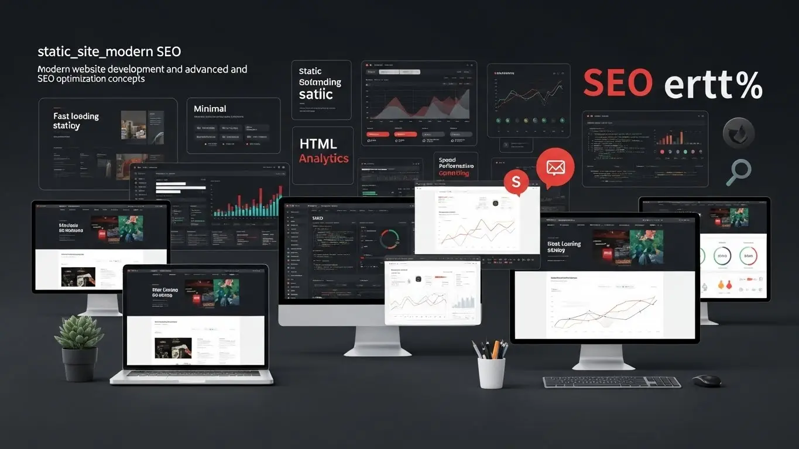

Web Dev

The Speed Revolution: Why Modern Static Websites are Dominating 2025
Static sites load faster and are more secure. Learn why frameworks like Next.js are bringing them back.
Discover the latest trends in Web Development, Mobile Engineering, and AI-Driven Content.
Static sites load faster and are more secure. Learn why frameworks like Next.js are bringing them back.
How brands are cutting production costs by 60% using AI to generate high-converting video ads.
A deep dive into the performance, developer experience, and future viability of leading frameworks.
Discover the latest SEO techniques shaping 2025 — from AI-powered optimization to search intent targeting.
The e-commerce landscape in 2025 has moved beyond simple product listings to a high-stakes environment where User Experience (UX) and site performance are the ultimate drivers of sales.
In 2025, AI has transformed corporate documentaries from simple promotional videos into cinematic, narrative-driven experiences.
In 2025, securing a dynamic website requires a shift from passive defense to proactive, multi-layered strategies.
Why 15-second videos generate more leads for B2B software companies than whitepapers.
Social Media Marketing (SMM) in 2025 has moved past simple posting schedules toward building high-trust community ecosystems.
Color is far more than an aesthetic choice; it is a powerful psychological tool that dictates how users perceive a brand's reliability and value.
As we move through 2025, the debate between Cloud and On-Premise infrastructure has shifted from an "either-or" choice to a strategic balance of performance, security, and cost-efficiency.
The digital landscape of 2025 has transformed email marketing from a broadcast tool into a high-precision instrument for hyper-personalization.